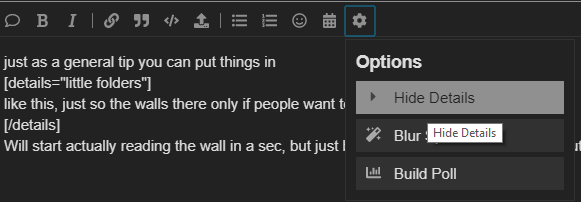

Yeah, I misremembered him being the one who originally said that, so then his later comments looked like he was just trying to stir the pot under that logic. But as I said, I misremembered him being the one to start the “Italy isn’t death immune” train; that was Nappy.
Some people might have other things going on and they might not be active for the entire day TBF
Nothing much of value… this somewhat suggests that she is curious into knowing what we are and that she lacks knowledge but nothing really big.
Stating the obvious, though it’s worthwhile in a newbie game.
When I mentioned before game that I would kill you N1 and reintroduced the topic here, you don’t seem to fear me. I’m curious… Is this because you townread me…or is it because you are scum and you know I’m town… or did you take it completely as a joke?
So basically what happened here is that Tele read Solic as town, and then a bunch of other people read Solic as town. What this suggests to be is that Tele and Solic are an unlikely scum team. In the event that Solic is scum, the fact that a townie townread Solic would make other scum feel more comfortable townreading Solic as well.
This quote comes to me as genuine and unsure of Solic’s alignment and class. Even more proof that Tele and Solic are not a scumteam. This makes me townread Tele as well.
Tele seems to want people to contribute so that there is more information to read. This feels like a townie move to me. There are other quotes like this as well.
See above. Tele shows that she is hungry for information.
True, but this is obvious. We were all waiting for Italy to say something meaningful. It feels like that if Italy is LHF, this statement doesn’t do much to prevent his death or lynch on its own.
Feels like an attempt to buddy up with Italy if Italy is town. There is a difference between pushing to kill and pushing for reactions/responses. It seems to me that you refer to the first one here.
I’ve pushed for Italy trying to make any sort of read before but this does look like a game-solver thing to say.
Good thing to say as town and trying to encourage Italy to reveal something about his alignment.
This imo, shows some lack of the burden of TMI, being unsure of Solic’s alignment. Since I’ve already been led to believe that Tele and Solic is an improbable scum team this comes to me as a townie thing to say.
So you are not Knight. Don’t go to that on a fake claim 
Another move, imo, to try and get Italy to say something meaningful for information.
I’ve already been repetitive enough and most other posts suggest the same thing imo. I classify Tele as a slight townread. The reason why I did this ISO is because the fact that Tele kinda wanted to buddy up with Italy caught my attention, and I wanted to evaluate the big picture and see what this quote meant.
I still want my questions answered though, Tele.
1 Like
gonna give my current headspace, take these with a grain of salt
Townlean:
Solic
Teleology
Marshal
Null:
Tangeld
Datbird
Napoleon
Sogman
Any inactives
Scumlean:
Italy
Derps
1 Like
But there are logs here, so killing wouldn’t work.
I suppose conversion is understandable. Thing is that of the death immune scum classes, MM and NK both absolutely shouldn’t be locked into mechanical thunderdomes or they will lose. Don’t think you’ve ever seen a NK that was CS’ed night 1 win.
I’m a massive hypocrite, because I want the discussion to gear more towards scum/non scum instead of what specific scum, but I had to reply
Just a general reminder people do have lifes, leaving for a bit isnt inherently scummy, we have 24ish hours to get all the talking done for the day, and realistically activity isnt usually a problem, unless they are avoiding it on purpose. Plus he just posted a wall, so maybe the wait was worth it, who knows
1 Like
Nappy learning from Arete, I see… That wallpost is brutal, give me a moment to read that.
1 Like
Were there logs in the recent FOL game?
I know there are in the hand of byzantium games but I don’t remember them in FOL
yeah just wanted to get my thoughts out quick and early, posts with my reads proper on each player will come quite soon
honestly, if you want my opinion on the matter, i’m actually the most suspicious of the person leading the court.
just as a general tip you can put things in
little folders
like this, just so the walls there only if people want to see it.
Will start actually reading the wall in a sec, but just because I know there are people who complain about it, sometimes.

its the hide details button
Yes, there are currently logs in every FoL still.
Refer to your hosts in classcards for questions as I’m a player like you. I might be trying to deceive you otherwise.
True, which is why the most important thing is to identify yourself as town to others. Just blurt out whatever you are thinking… it doesn’t have to be a good read.
Italy is sticking too hard to ToL logic here, and he really ought to know (partly because it’s been said in this game already) that that doesn’t translate well to FoL. It fuels the scumread because he’s running on instinct, which tells me that he’s defensive where BD ought to be proactive.
1 Like